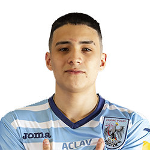
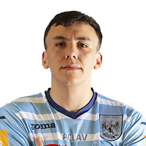
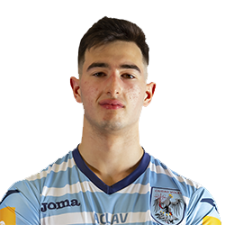
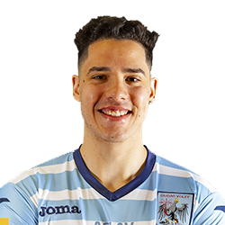

LIGA ARGENTINA
VOLEIBOL
LISTA DE JUGADORES DE CIUDAD
| Nombre | Nº | Apellido y Nombre | Posicion | Fecha de Nacimiento | Altura |
|---|---|---|---|---|---|
|  | 1 | Vázquez Ezequiel | Armador | 07-03-2004 | 188 cm |
|  | 2 | Soria Rodrigo | Central | 06-08-2001 | 193 cm |
|  | 3 | Albrecht Manuel | Punta Receptor | 17-05-2004 | 175 cm |
|  | 4 | Acosta Wilson | Punta Receptor | 28-02-2001 | 188 cm |
| 5 | Scarpa Tobías | Libero | 20-10-2001 | 187 cm | |

|
6 | Haureluk Enzo | Opuesto | 12-10-2003 | 193 cm |